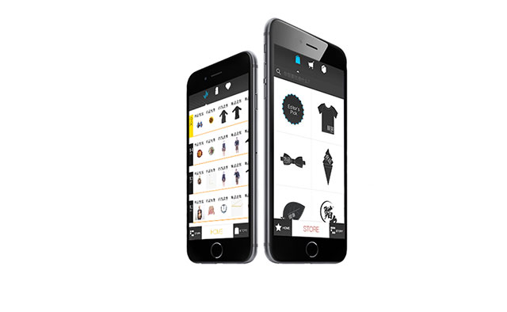
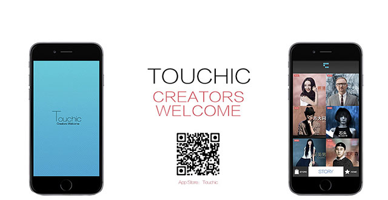

Touchic｜Creators Welcome
关注我们
#Touchic #CreatorsWelcome
TOUCHIC
Creators Welcome

Touchic is China’s first social media driven e-commerce website,combining inspiring state of the art social media functionswith a sophisticated, engaging shopping experience.

100 percent developed by Touchic’s extensive R&D team, Touchic boosts top notch technology with a sleak and stylish content and visual interface. Easy and playful, highly engaging and addictive, it offers its users a completely new shopping sensation. Touchic caters to an affluent crowd of shoppers looking for unique products representing their sophisticated lifestyle.
触动时尚文化传媒（北京）有限公司
Touchic Media Co ., Ltd